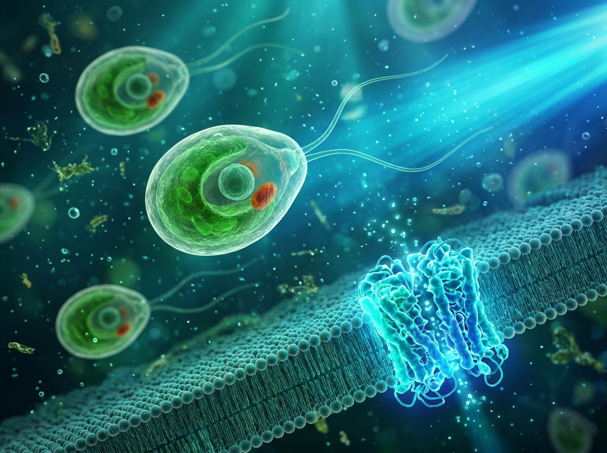
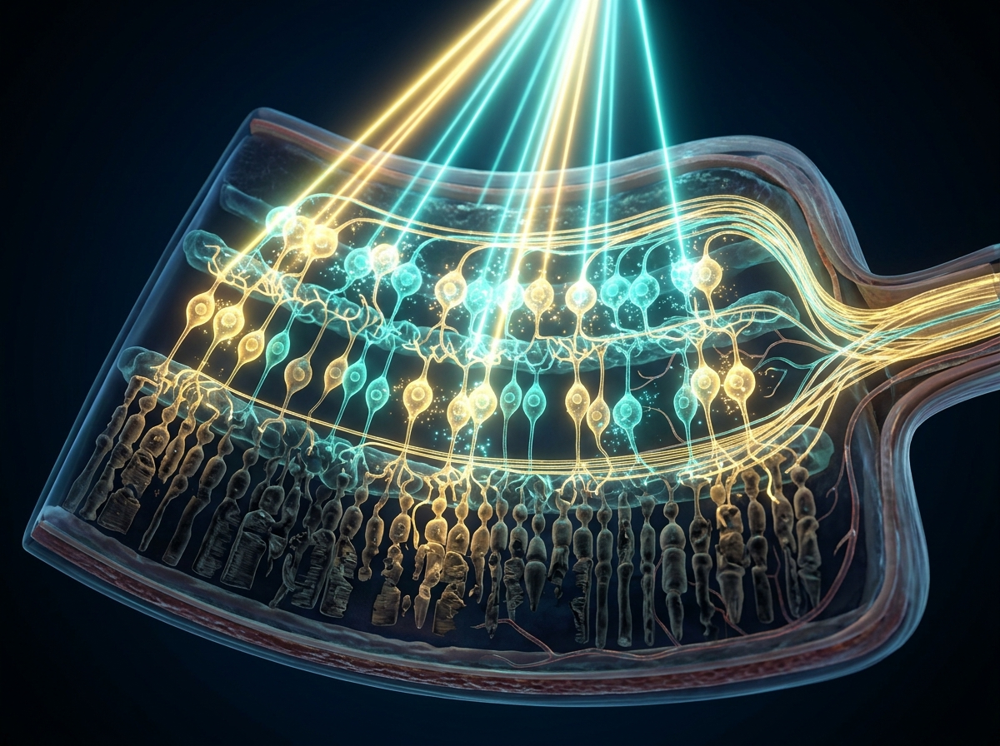
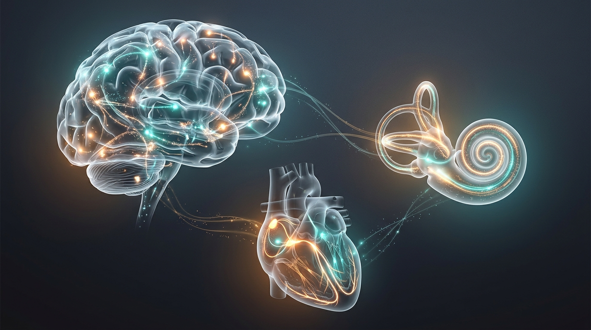

Honoring the Architects of Light-Controlled Neuroscience
On October 5, 2026, the Nobel Assembly at the Karolinska Institutet in Stockholm awarded the 2026 Nobel Prize in Physiology or Medicine jointly to American psychiatrist and bioengineer Karl Deisseroth and German biophysicists Peter Hegemann and Georg Nagel “for their discoveries concerning light-gated ion channels and optogenetics.” Sharing the 12 million Swedish kronor award equally, the three laureates turned what was once considered an impossible dream in neurobiology into one of modern medicine’s most versatile discoveries (NobelPrize.org Summary).
For decades, scientists struggled to map how the human brain—an organ weighing roughly 1.3 kilograms and containing around 90 billion interconnected nerve cells—produces memories, emotions, and actions (Nobel Popular Information). Even Nobel laureate Francis Crick, co-discoverer of DNA’s double helix, speculated in the late 20th century that because neural signals travel so rapidly, light would be the ideal tool to switch specific neurons on or off in a living brain (Nobel Popular Information).
“Optogenetics provides opportunities for mapping the brain in a way that we could once only dream of.”
Karl Deisseroth, MD, PhD
Stanford University & Howard Hughes Medical Institute, USA
Born in 1971, Deisseroth earned his PhD (1998) and MD (2000) from Stanford University. Motivated by clinical encounters with psychiatric patients, he engineered channelrhodopsin-2 into mammalian neurons in 2005 and demonstrated optical control of neural circuits in living mice in 2007 (Nobel Press Release).
Peter Hegemann, PhD
Humboldt University of Berlin, Germany
Born in 1954, Hegemann began studying the green alga Chlamydomonas in the early 1990s at the Max Planck Institute for Biochemistry in Martinsried, discovering that its eyespot generated an electrical current within 0.5 milliseconds of light exposure (Nobel Popular Information).
Georg Nagel, PhD
University of Würzburg, Germany
Born in 1953, Nagel collaborated with Hegemann while at the Max Planck Institute for Biophysics in Frankfurt, expressing algal rhodopsin genes in frog oocytes and mammalian kidney cells in 2002–2003 to prove they acted as directly light-gated ion channels (Nobel Popular Information).
From Light-Seeking Pond Algae to a Millisecond Neural Switch
The story of optogenetics began not in a hospital clinic, but in a petri dish swirling with Chlamydomonas reinhardtii, a single-celled green alga that swims toward sunlight to photosynthesize (Nobel Popular Information). In the human eye, capturing light triggers a multi-step biochemical cascade that takes at least 10 milliseconds to open an ion channel. Yet when Peter Hegemann measured electrical currents in the tiny orange eyespot of Chlamydomonas in the early 1990s, he found that an electrical impulse fired in just 0.5 milliseconds—more than twenty times faster than human photoreceptors (Nobel Popular Information).
Hegemann hypothesized that a single algal protein both captured photons and served as a membrane ion channel. Around the turn of the millennium, after Japanese researchers sequenced the Chlamydomonas genome, Hegemann identified two candidate genes and partnered with electrophysiologist Georg Nagel (Nobel Popular Information). By expressing these genes in frog eggs (Xenopus laevis oocytes) and human embryonic kidney cells in 2002 and 2003, Nagel and Hegemann proved that channelrhodopsin-1 and channelrhodopsin-2 (ChR2) open within 0.2 milliseconds of blue light illumination, allowing positively charged ions to surge into the cell (Nobel Popular Information).

In 2005, Karl Deisseroth’s laboratory at Stanford University—collaborating with Nagel and Ernst Bamberg—introduced the gene for channelrhodopsin-2 into cultured rat neurons (R&D World). Pulse after pulse of blue light triggered action potentials on command without harming the delicate nerve cells (Nobel Popular Information). Coining the term optogenetics in 2006, Deisseroth and colleagues paired viral gene delivery with hair-thin fiber-optic cables in 2007 to control motor cortex activity and wakefulness in living mice, and later teamed up with 1987 Nobel laureate Susumu Tonegawa in 2012 to reactivate specific memory engrams using light (Nobel Popular Information).
Why Retinitis Pigmentosa Is the Flagship Disease for Optogenetic Therapy
While optogenetics transformed basic brain research, the human eye quickly emerged as its most compelling clinical frontier. Unlike deep brain structures that require implanted optical fibers, the retina is naturally transparent and designed to receive light directly (R&D World).
Retinitis pigmentosa (RP) is the most common group of inherited retinal diseases (IRDs), affecting roughly 1 in 4,000 people—more than 1.5 million individuals worldwide and over 100,000 people in the United States (GenSight Biologics; Nanoscope Therapeutics). In RP, genetic mutations progressively destroy the retina’s primary light-capturing photoreceptor cells—the rods and cones. Patients typically experience night blindness first, followed by a relentless narrowing of peripheral vision ("tunnel vision"), losing an average of 0.03 LogMAR (about 1.5 letters on an eye chart) per year until a majority become legally blind (worse than 20/200) by age 60 (Nanoscope Therapeutics).
Interactive Retinal Pathway Explorer
Select a retinal state below to compare how light is processed in a healthy retina, a retina affected by late-stage retinitis pigmentosa, and an optogenetically treated retina:
Healthy Retinal Signaling
Light passes through the transparent inner retinal layers to strike outer rods and cones. Photoreceptors convert photons into chemical and electrical signals (taking ≥10 ms), relaying them through bipolar cells to retinal ganglion cells, whose axons form the optic nerve to the brain (NobelPrize.org).

The Game-Changing Advantage: A "Mutation-Agnostic" Approach
Conventional gene replacement therapy faces a daunting hurdle in retinitis pigmentosa: the disease is linked to more than 1,000 distinct mutations across over 100 different genes (Nanoscope Therapeutics). Furthermore, once a patient’s rods and cones have died in advanced disease, replacing a single defective photoreceptor gene can no longer revive lost cells.
Optogenetics solves both problems simultaneously. As first demonstrated in blind mice in 2006 by Dr. Zhuo-Hua Pan’s laboratory at Wayne State University, inner retinal neurons—specifically retinal bipolar cells and retinal ganglion cells (RGCs)—survive long after rods and cones degenerate (R&D World; Ray Therapeutics). By using a harmless adeno-associated virus (AAV) vector administered via a single in-office intravitreal injection into the eye, doctors insert the genetic blueprint for a light-sensitive opsin protein directly into those surviving inner neurons (Retina UK). Because this bypasses rods and cones entirely, optogenetic therapy is mutation-agnostic (gene-independent): a single treatment can potentially help patients regardless of which of the 100+ genes caused their blindness (Nanoscope Therapeutics).
Inside the Clinical Trials Restoring Vision in Humans
When the 2026 Nobel Prize was announced, optogenetics was no longer just a laboratory promise—its lead clinical candidate was already under active regulatory review by the U.S. Food and Drug Administration (FDA), and landmark human clinical data were published in The New England Journal of Medicine that same week (R&D World; GenSight Biologics). Below is an in-depth look at the leading optogenetic platforms reshaping retinal medicine.
1. Nanoscope Therapeutics — MOGENRY® (sonpiretigene isteparvovec, MCO-010)
On September 9, 2026—less than a month before the Nobel announcement—the FDA accepted and filed the Biologics License Application (BLA) for MOGENRY (MCO-010), positioning it for a regulatory decision in the first half of 2027 as potentially the world's first FDA-approved optogenetic therapy (R&D World). Invented by Nanoscope Co-Founder Dr. Samarendra Mohanty, MCO-010 delivers a synthetic multi-characteristic opsin (MCO) to dense retinal bipolar cells via a one-time, in-office intravitreal injection (Nanoscope Press Release). Notably, one of the three light-sensitive components in MOGENRY is CatCh, an engineered variant of channelrhodopsin-2 developed by Ernst Bamberg (Georg Nagel’s longtime collaborator at the Max Planck Institute of Biophysics) and licensed from Max Planck Innovation in 2024 (R&D World).
Because MCO-010 responds rapidly across the broad visible light spectrum at ordinary ambient light levels, patients do not require external light-amplifying goggles (R&D World). In the randomized, sham-controlled Phase 2b/3 RESTORE trial and its long-term REMAIN follow-up study, patients achieved statistically significant visual acuity improvements at weeks 52 and 76, maintaining an average gain equivalent to roughly three lines on a standard eye chart through 3 to 4 years of follow-up with no treatment-related serious adverse events (R&D World; Ophthalmology Times).
2. GenSight Biologics & Institut de la Vision — GS030 (ChrimsonR + Light-Stimulating Goggles)
Pioneered by Professors José-Alain Sahel and Botond Roska, GenSight Biologics' GS030 combines an AAV2 intravitreal gene therapy encoding a red-shifted channelrhodopsin (ChrimsonR) in retinal ganglion cells with wearable biomimetic light-stimulating goggles (Ophthalmology Management). In 2021, a landmark Nature Medicine case report from the Phase 1/2 PIONEER trial provided the first proof-of-concept in humans when a blind RP patient regained the ability to perceive, locate, count, and grasp objects on a table (Nobel Popular Information; GenSight 2021 Release).
On October 8, 2026—just three days after the Nobel Prize announcement—GenSight and the 15-20 National Hospital in Paris announced the publication of full PIONEER Phase 1/2 trial results in The New England Journal of Medicine (NEJM). Across 10 treated participants with late-stage RP, 6 of 10 patients showed clinically meaningful improvements in light sensitivity on full-field stimulus threshold (FST) testing, and 4 of 8 evaluated patients demonstrated positive behavioral gains in detecting, localizing, or touching objects and determining bar orientation while wearing the goggles, corroborated by high-density EEG signals reaching the visual cortex (GenSight NEJM Release).
3. Ray Therapeutics — RTx-015 & RTx-021 Bioengineered Opsins
Building on the foundational retinal research of Dr. Zhuo-Hua Pan, Berkeley-based Ray Therapeutics is advancing next-generation bioengineered opsins that work without goggles via a single intravitreal injection. Their lead candidate, RTx-015, targets retinal ganglion cells in patients with advanced retinitis pigmentosa and choroideremia (Retina UK). In April 2026, RTx-015 received both the FDA’s Regenerative Medicine Advanced Therapy (RMAT) designation and the European Medicines Agency’s Priority Medicines (PRIME) designation. A companion candidate, RTx-021, targets retinal bipolar cells to preserve higher-order retinal processing in Stargardt disease and geographic atrophy (Ray Therapeutics).
Comparative Overview of Optogenetic Vision Therapies (2026)
| Therapy & Developer | Optogenetic Protein | Target Retinal Cell | External Goggles? | 2026 Clinical & Regulatory Status |
|---|---|---|---|---|
| MOGENRY® (MCO-010) Nanoscope Therapeutics | Synthetic Multi-Characteristic Opsin (includes CatCh) | Retinal Bipolar Cells | No (Ambient Light) | FDA BLA accepted Sept 2026; Phase 2b/3 RESTORE & 4-yr REMAIN positive; Stargardt Phase 3 planned (AAO 2026) |
| GS030 GenSight Biologics | ChrimsonR (Red-shifted channelrhodopsin) | Retinal Ganglion Cells (RGCs) | Yes (Biomimetic Goggles) | Phase 1/2 PIONEER results published in NEJM Oct 8, 2026 (light sensitivity gains in 6/10 patients) (Retinal Physician) |
| RTx-015 Ray Therapeutics | Bioengineered High-Sensitivity Opsin | Retinal Ganglion Cells (RGCs) | No (Ambient Light) | Phase 1 trial in RP & Choroideremia; granted FDA RMAT & EMA PRIME designations in April 2026 (RayTx) |
| RTx-021 Ray Therapeutics | Bioengineered Bipolar-Targeted Opsin | Retinal Bipolar Cells | No (Ambient Light) | Advancing for Stargardt disease & Geographic Atrophy; backed by $8M CIRM grant (RayTx) |
| ChReef Platform UMG Göttingen / EKFZ OT | ChReef (Ultra-efficient channelrhodopsin) | Retinal / Auditory / Cardiac Cells | Ultra-Low Light Threshold | Preclinical breakthrough published in Nature Biomedical Engineering (restored brightness detection in blind mice) (DZHK) |
Beyond Retinitis Pigmentosa: How Optogenetics Is Targeting Many Other Diseases
Retinitis pigmentosa is only the opening chapter. Because every excitable cell in the human body—from retinal neurons and inner-ear hair cells to heart muscle fibers and deep-brain circuits—communicates through ion channels and electrical potentials, the 2026 Nobel discovery offers a universal blueprint for bioelectronic and gene-targeted medicine (Nobel Popular Information).

Stargardt Disease, Geographic Atrophy & Choroideremia
Building on RP success, Nanoscope Therapeutics completed its Phase 2 STARLIGHT clinical trial of MCO-010 in Stargardt disease (juvenile macular degeneration) and is initiating a Phase 3 registrational trial alongside a Phase 2 program in geographic atrophy (late-stage dry age-related macular degeneration) and IND-ready work in Leber congenital amaurosis (LCA). Concurrently, Ray Therapeutics is evaluating RTx-015 in choroideremia and RTx-021 in macular degeneration.
Severe Hearing Loss & Optical Cochlear Implants (oCI)
Highlighted in the 2026 Nobel Prize popular background, conventional electrical cochlear implants suffer from broad current spread in the inner ear, making it hard for users to distinguish fine musical pitches or speech in noisy rooms. Because light can be tightly focused, researchers led by Prof. Tobias Moser and Dr. Thomas Mager at Göttingen University Medical Centre engineered ChReef—an ultra-efficient channelrhodopsin that enables low-energy "hearing with light" in primate models, paving the way for high-resolution optical cochlear implants.
Cardiac Arrhythmias & Gentle Optical Pacemakers
Electrical defibrillators reset life-threatening cardiac arrhythmias using high-energy shocks that cause severe pain and tissue stress. Using the high-efficiency ChReef channelrhodopsin, cardiovascular scientists led by Prof. Tobias Brügmann at the German Centre for Cardiovascular Research (DZHK) demonstrated that irregularly beating heart muscle cells can be restored to a steady rhythm using gentle pulses of light with minimal energy expenditure. Deisseroth’s lab also used optical cardiac pacing to show how elevated heart rates directly interact with brain circuits governing anxiety (Nobel Popular Information).
Drug-Resistant Epilepsy & On-Demand Seizure Brakes
In severe, drug-resistant epilepsy, hyperactive neural networks fire out of control. Researchers at UCSF and the Prague Epileptology Research Centre (EpiReC) at Charles University use optogenetics to map how seizures initiate and propagate, demonstrating that targeted light pulses can act as an instantaneous "molecular brake" to silence seizure-like activity in human brain tissue models without surgical resection.
Parkinson’s Disease, Depression, Addiction, Chronic Pain & Gut-Brain Signaling
Even when light is not delivered directly into a human patient's brain, optogenetic circuit mapping in preclinical models is directly redesigning human neuromodulation therapies. As documented in NIH / PMC translational studies and the European Research Council (CORDIS) report, optogenetics pinpointed the exact basal ganglia pathways responsible for tremors and rigidity in Parkinson’s disease, enabling next-generation Deep Brain Stimulation (DBS) protocols with fewer side effects. Simultaneously, optogenetic discoveries have identified distinct neural circuits controlling depression, schizophrenia, Alzheimer's disease, chronic pain, sleep-wake cycles, and gut-brain nutrient sensing (Nobel Popular Information).
Frequently Asked Questions About Optogenetics & Retinitis Pigmentosa
References & Primary Sources
- Nobel Assembly at Karolinska Institutet (Oct 5, 2026): Press Release: The Nobel Prize in Physiology or Medicine 2026 — Karl Deisseroth, Peter Hegemann, and Georg Nagel.
- NobelPrize.org Popular Science Background (2026): A light-sensitive algal protein energised neuroscience.
- Nanoscope Therapeutics Press Release (Sept 9, 2026): U.S. FDA Acceptance of Biologics License Application for MOGENRY (sonpiretigene isteparvovec, MCO-010) for Retinitis Pigmentosa.
- R&D World (Oct 5, 2026): Optogenetics just won the Nobel Prize, its first therapy is already under FDA review.
- GenSight Biologics & 15-20 National Hospital (Oct 8, 2026): NEJM Publication on GS030 PIONEER Phase 1/2 Trial Results in Late-Stage Retinitis Pigmentosa.
- Ophthalmology Times (Sept 24 & Oct 11, 2026): Retina Society & AAO 2026: MCO-010 sustains visual acuity gains through 4 years in advanced RP.
- Ray Therapeutics (Oct 6, 2026 & Aug 29, 2026): Ray Therapeutics Celebrates 2026 Nobel Prize & Retina UK Overview of RTx-015 for RP and Choroideremia.
- German Centre for Cardiovascular Research (DZHK) & Göttingen University Medical Centre: Light as medicine: ChReef cell switch brings hope for vision, hearing (optical cochlear implant) and heart diseases.
- UCSF & Charles University EpiReC: How Optogenetics Can Put the Brakes on Epilepsy Seizures & Epilepsy Research at Charles University.